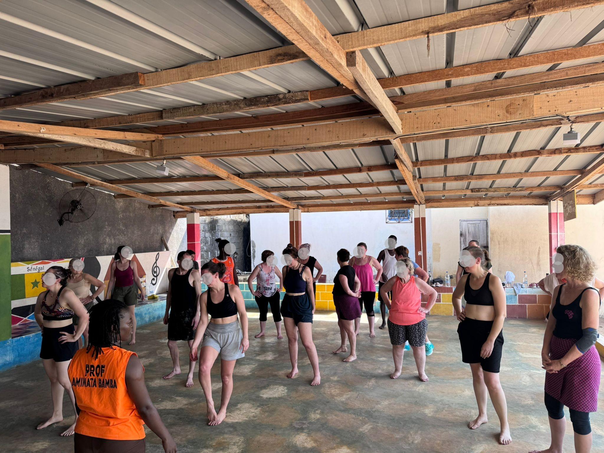

Côte d’Ivoire · février 2026
Grand-Bassam & Guéménédou
Stage de danse à Grand-Bassam, musique, visites, puis séjour à Guéménédou pour rencontrer les villageois et remettre les dons apportés par l’association.
Voir le voyage en images